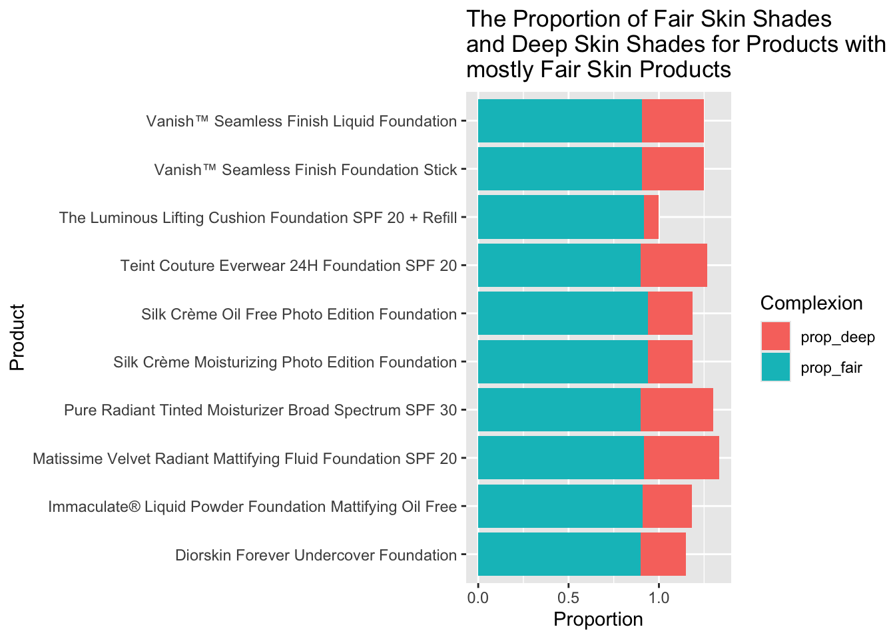
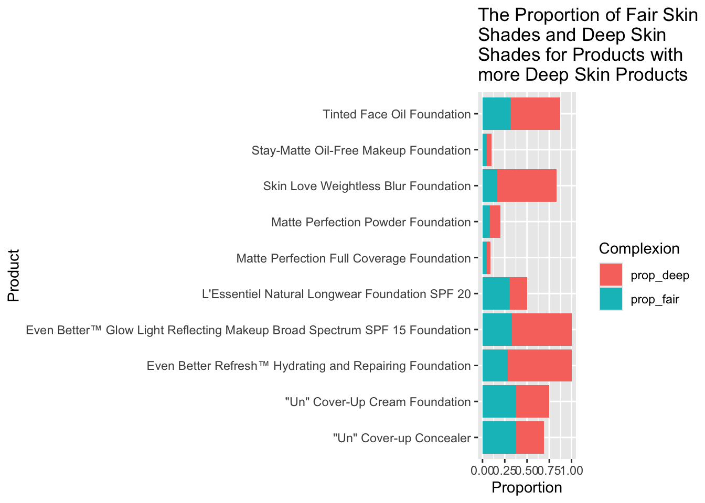
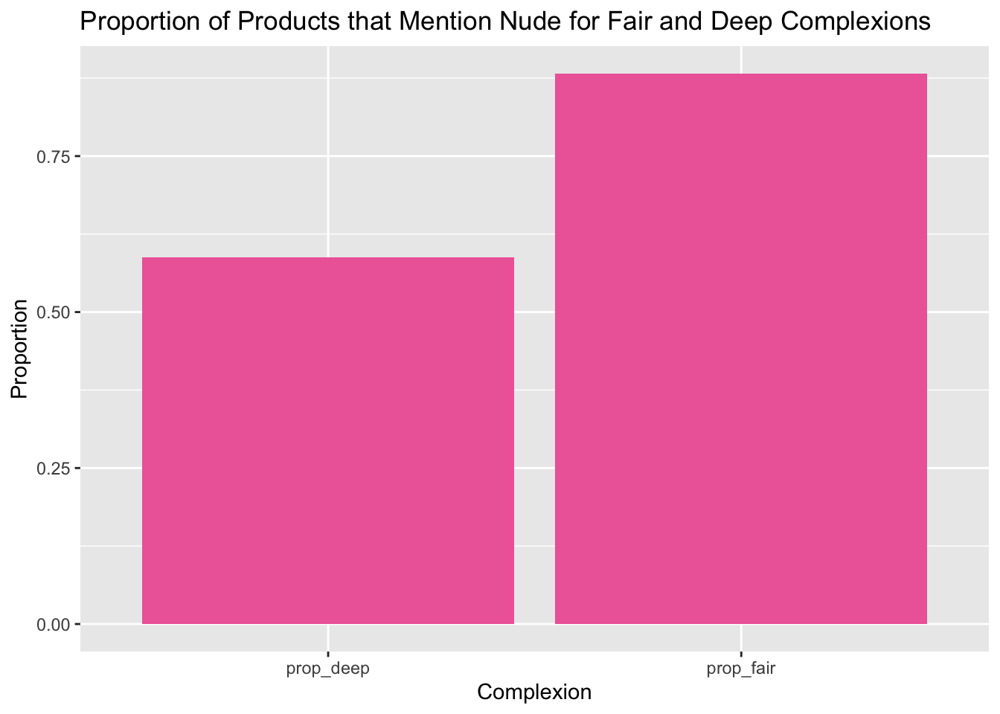

I got my data from The Pudding Essay “The Naked Truth”. (Source: https://pudding.cool/2021/03/foundation-names/)
I wanted to examine the proportion of foundation products for fair skin and deep skin, so I created a dataset that shows the products that included “fair”, “deep”, and similar words in their description. I calculated the proportion of shades for fair skin and dark skin for each product.
# A tibble: 158 × 3
product prop_fair prop_deep
<chr> <dbl> <dbl>
1 Silk Crème Moisturizing Photo Edition Foundation 0.938 0.25
2 Silk Crème Oil Free Photo Edition Foundation 0.938 0.25
3 Matissime Velvet Radiant Mattifying Fluid Foundation SPF… 0.917 0.417
4 The Luminous Lifting Cushion Foundation SPF 20 + Refill 0.917 0.0833
5 Immaculate® Liquid Powder Foundation Mattifying Oil Free 0.909 0.273
6 Vanish™ Seamless Finish Foundation Stick 0.906 0.344
7 Vanish™ Seamless Finish Liquid Foundation 0.906 0.344
8 Diorskin Forever Undercover Foundation 0.9 0.25
9 Pure Radiant Tinted Moisturizer Broad Spectrum SPF 30 0.9 0.4
10 Teint Couture Everwear 24H Foundation SPF 20 0.9 0.367
# ℹ 148 more rows
Next I took ten products with the most fair shades and graphed it with its proportion of deep shades. I did the same with the ten products with the least amount of fair shades.
complex |>head(10) |>pivot_longer(-product, names_to="complex", values_to="value") |>ggplot(aes(x=value, y=product, fill= complex))+geom_col() +labs(x="Proportion", y="Product", fill="Complexion", title="The Proportion of Fair Skin Shades and Deep Skin Shades for Products with mostly Fair Skin Products")

complex |>tail(10) |>pivot_longer(-product, names_to="complex", values_to="value") |>ggplot(aes(x=value, y=product, fill= complex))+geom_col()+labs(x="Proportion", y="Product", fill="Complexion", title="The Proportion of Fair Skin Shades and Deep Skin Shades for Products with more Deep Skin Products")

As you can see from the above graphs, the ten products with the most fair shades had really low percentages of deep shades compared to the proportion of fair shades for the ten products with the most deep shades. The products with the most deep shades sometimes even had more fair shades or about the same number of fair shades. (Some shades can be used for multiple skin tones as well, which is why the proportions don’t add up to one). This suggests some disparity between the available deep shades and fair shades for a lot of foundations. Fair shades appear to be more readily available
I then wanted to see what words in the descriptions of these shades had capital letters. Capital letters typically correspond to a place, food, or material that represents the shade.
[30] │ 340 for tan skin with cool undertones (<Rihanna>'s <Shade>) - <Selected>
[93] │ 445 for deep skin with warm olive undertones - <Selected>
[125] │ 7.8 tan, olive - <Selected>
[155] │ 1 <Rendevous> very fair with cool undertones
[156] │ 2 <Tulum> very fair with warm undertones
[157] │ 3 <Balos> <Fair> with neutral cool undertones
[158] │ 4 <Formosa> fair with warm undertones
[159] │ 5 <Bom> <Bom> light with neutral undertones
[160] │ 6 <Ora> light with warm undertones
[161] │ 7 <Diaz> <Light> medium with neutral undertones
[162] │ 8 <Shela> <Light> medium with neutral warm undertones
[163] │ 9 <Paloma> medium with neutral undertones
[164] │ 10 <Porto> <Ferro> medium with warm undertones
[165] │ 11 <Matira> medium tan with neutral undertones
[166] │ 12 <Kokkini> medium tan with warm undertones - <Selected>
[167] │ 13 <Kamari> medium dark with warm undertones
[168] │ 14 <Dominica> medium dark with neutral undertones
[169] │ 15 <Porto> <Covo> <Dark> with neutral undertones
[170] │ 16 <Pavones> dark with warm undertones
[171] │ 17 <Miho> <Deep> with warm undertones
... and 3309 more
I then wanted to compare these capital words (it would only be the first capital for each shade if there are multiple). To see what relationship there might be between shade names and descriptor words.
Surprisingly, some of the words seem to have an even split between deep and fair shades. Although there are obviously some that have more fair shades (Vanilla), and more deep shades (Mocha). One I find particularly interesting is that Natural has more fair shades than deep shades. Is this inadvertently implying that deeper skin tones are not natural and fair skin tones are? This implies that there are some past racial biases that still exist in today’s culture.
One word I wanted to look at specifically is nude. Similar to natural, nude is technically anyone’s natural skin tone, but I wanted to see if it was present more on fair shade foundations.
nude |>ggplot(aes(x= complex, y= value)) +geom_col(fill="hotpink2") +labs(x="Complexion", y="Proportion", title="Proportion of Products that Mention Nude for Fair and Deep Complexions")

A lot of deep shades have nude in their descriptor, as well as a lot of fair shades. There are many more fair shades that contain the word, although it’s not like the deeper shades are lacking in that descriptor.
Overall, this data could imply the presence of some racial biases, but it is not nearly as bad as I thought it would be.